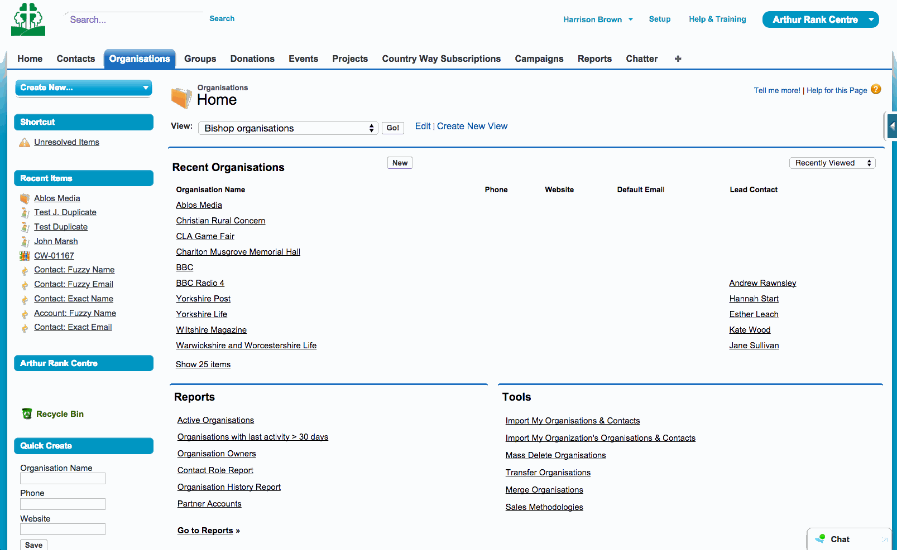

Dealing with duplicates
On this page:
Catching a duplicate
When saving a new or updated Contact or Organisation, SalesForce will check to see whether this is a potential duplicate. If a potential duplicate is found SalesForce will block the save and present a message highlighting the fact that this record may be a duplicate.

Overriding the duplicate catcher
When the duplicate catcher blocks a save because there might be a duplicate you can choose to look at the existing records it found by clicking on their names, or you can choose to override the duplicate catcher once you are satisfied you are not actually creating a duplicate Contact or Organisation. Just click on Override DupeCatcher to proceed with saving the record as normal.
Changing how the duplicate catcher works
If you want to check or change how the duplicate catcher works (for example, to add a rule to check other specific email matches) just contact Harrison to discuss how this can be implemented.
Merging existing duplicates
Merging Contacts
SalesForce has a tool to help you merge duplicate contacts. To merge two or more Contact's into one record they first must be part of the same Organisation, and you'll then use the Organisation's merge Contact's tool.
- Ensure all contacts you wish to merge together are in the same Organisation. You can change this Organisation after the merge is completed, so you may need to place them in a temporary Organisation if the Contact's to merge don't have an Organisation.
- Find the Organisation containing the Contacts you wish to merge.
- Click the "Merge Contacts" option in the Contacts section to launch the Merge My Contacts tool.
- Search for the Contacts to merge by name. From the list of potential duplicates is displayed check the check boxes next to those you with to merge into one Contact. You can merge two or more records using the tool.
- Click "Next." The Select the Values to Retain screen opens. The first contact record is listed on the left, and duplicates are listed on the right side of the screen.
- Click the radio button in front of each field to retain it in the merged record.
- Click the “Merge” button. A warning message displays indicating that the merge cannot be undone.
- Click “OK” to merge the records.
Note that Notes, attachments and documents for all selected duplicate records are saved in the final merged record.
Warning: After records are merged, the action cannot be reversed.